概率图模型
概率图模型是用图来表示变量概率依赖关系的理论，结合概率论与图论的知识，利用图来表示与模型有关的变量的联合概率分布。由图灵奖获得者Pearl开发出来。概率图模型(Probabilistic Graphical Model)构建了这样一幅图，用观测结点表示观测到的数据，用隐含结点表示潜在的知识，用边来描述知识与数据的相互关系，最后基于这样的关系图获得一个概率分布，非常“优雅”地解决了问题。
概率图中的节点分为隐含节点和观测节点，边分为有向边和无向边。从概率论的角度，节点对应于随机变量，边对应于随机变量的依赖或相关关系，其中有向边表示单向的依赖，无向边表示相互依赖关系。
概率图模型分为贝叶斯网络（Bayesian Network）和马尔可夫网络（Markov Network）两大类。贝叶斯网络可以用一个有向图结构表示，马尔可夫网络可以表 示成一个无向图的网络结构。更详细地说，概率图模型包括了朴素贝叶斯模型、最大熵模型、隐马尔可夫模型、条件随机场、主题模型等，在机器学习的诸多场景中都有着广泛的应用。
贝叶斯定理
条件概率（又称后验概率）就是事件A在另外一个事件B已经发生条件下的发生概率。条件概率表示为P(A|B)，读作“在B条件下A的概率”。
比如上图，在同一个样本空间Ω中的事件或者子集A与B，如果随机从Ω中选出的一个元素属于B，那么这个随机选择的元素还属于A的概率就定义为在B的前提下A的条件概率：
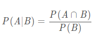
联合概率：联合概率指的是包含多个条件且所有条件同时成立的概率，记作P(X=a,Y=b)或P(a,b)
边缘概率(先验概率)：边缘概率是与联合概率对应的，P(X=a)或P(Y=b)，这类仅与单个随机变量有关的概率称为边缘概率
条件概率：条件概率表示在条件Y=b成立的情况下，X=a的概率，记作P(X=a|Y=b)或P(a|b)
联合概率与边缘概率的关系：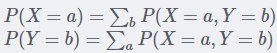
联合概率、边缘概率、条件概率之间的关系：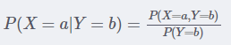
贝叶斯公式
- 先验概率：知道原因推结果的，P(原因)、P(结果|原因)等
- 后验概率：根据结果推原因的，P(原因|结果)等
贝叶斯公式解决的是一些原因X无法直接观测、测量，而我们希望通过其结果Y来反推出原因X的问题，也就是知道一部分先验概率，来求后验概率的问题。
先来推导一下贝叶斯公式：
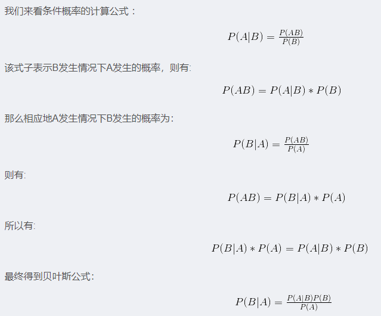
举个列子理解一下：
问：打到怪物就能获得宝箱，但是宝箱有2/3的概率是陷阱，玩家可以通过魔法来检查，但是有1/4的误判概率，问：假设玩家利用魔法判定此宝箱没有陷阱，求宝箱有陷阱的概率？
已知先验概率：
P(有陷阱)=2/3；P(没有发现|有陷阱)=1/4；P（发现了|没有陷阱)=1/4
要求的后验概率为：
P(有陷阱|没有发现)

可以推出：
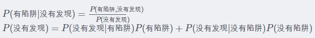
所以：
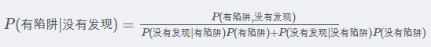
贝叶斯网络
贝叶斯网络(Bayesian network)，又称信念网络(Belief Network)，或有向无环图模型(directed acyclic graphical model)，是一种概率图模型，它是一种模拟人类推理过程中因果关系的不确定性处理模型，其网络拓朴结构是一个有向无环图(DAG)。
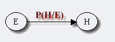
图中的节点表示随机变量 ，它们可以是可观察到的变量或隐变量、未知参数等。认为有因果关系（或非条件独立）的变量或命题则用箭头来连接。若两个节点间以一个单箭头连接在一起，表示其中一个节点是“因(parents)”，另一个是“果(children)”，两节点就会产生一个条件概率值。
，它们可以是可观察到的变量或隐变量、未知参数等。认为有因果关系（或非条件独立）的变量或命题则用箭头来连接。若两个节点间以一个单箭头连接在一起，表示其中一个节点是“因(parents)”，另一个是“果(children)”，两节点就会产生一个条件概率值。
简言之，把某个研究系统中涉及的随机变量，根据是否条件独立绘制在一个有向图中，就形成了贝叶斯网络。此外，对于任意的随机变量，其联合概率可由各自的局部条件概率分布相乘而得出：
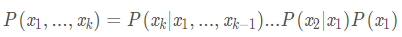)
贝叶斯网络的基本结构形式
1. head-to-head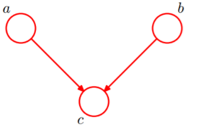
由上图可知：P(a,b,c)=P(a)P(b)P(c|a,b)成立。a，b为独立的。
2. tail-to-tail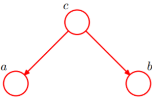
c未知的情况下：P(a,b,c)=P(c)P(a|c)P(b|c)，此时没法得出P(a,b) = P(a)P(b),所以a，b不独立
c已知的情况下：P(a,b|c)=P(a,b,c)/P(c)，a，b独立。
3. head-to-tail
c未知的情况：P(a,b,c)=P(a)P(c|a)P(b|c)，但不能推出P(a,b) = P(a)P(b)，a，b不独立。
c已知的情况：a，b独立。
即在xi给定的条件下，xi+1的分布和x1,x2…xi-1条件独立，意味着xi+1的分布状态只和xi有关，和其他变量条件独立。通俗点说，当前状态只跟上一状态有关，跟上上或上上之前的状态无关。这种顺次演变的随机过程，就叫做马尔科夫链（Markov chain）。
因子图
维基百科的定义：将一个具有多变量的全局函数因子分解，得到几个局部函数的乘积，以此为基础得到的一个双向图叫做因子图（Factor Graph）。
通俗来讲，所谓因子图就是对函数进行因子分解得到的一种概率图。一般内含两种节点：变量节点和函数节点。我们知道，一个全局函数通过因式分解能够分解为多个局部函数的乘积，这些局部函数和对应的变量关系就体现在因子图上。
举个例子，现在有一个全局函数，其因式分解方程为：
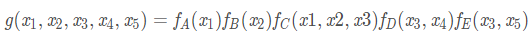 ==》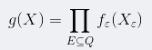
其中fA,fB,fC,fD,fE为各函数，表示变量之间的关系，可以是条件概率也可以是其他关系。其对应的因子图为：
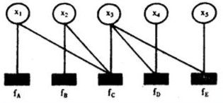
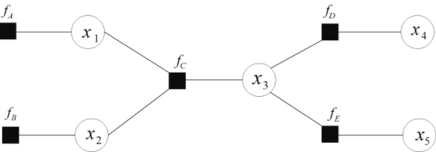
在概率图中，求某个变量的边缘分布是常见的问题。这问题有很多求解方法，其中之一就是把贝叶斯网络或马尔科夫随机场转换成因子图，然后用sum-product等算法求解。
loopy Belief Propagation（置信度传播）
Three Different Algorithm for LBP
- sum-product
- max-product
- min-sum
sum-product原理：
对于由贝叶斯网络或马尔可夫随机场转化而来的因子图如下左图，其全局函数如下右图。


此时，如何利用其联合概率分布求其边缘概率分布？事实上，某个随机变量 fk 的边缘概率可由x1,x2,x3, …, xn的联合概率求到，具体公式为：

如果有

举个实例体验一下： 假如我们需要计算如下式子的结果

同时全局函数分解后的因子图为：

我们对其全局的每个子任务进行剖析如下：

因为变量的边缘概率等于所有与他相连的函数传递过来的消息的积，所以计算得到：

仔细观察上述计算过程，可以发现，其中用到了类似“消息传递”的观点，且总共两个步骤。
- 第一步、对于f 的分解图，根据蓝色虚线框、红色虚线框围住的两个box外面的消息传递
- 第二步、根据蓝色虚线框、红色虚线框围住的两个box内部的消息传递：

根据

即